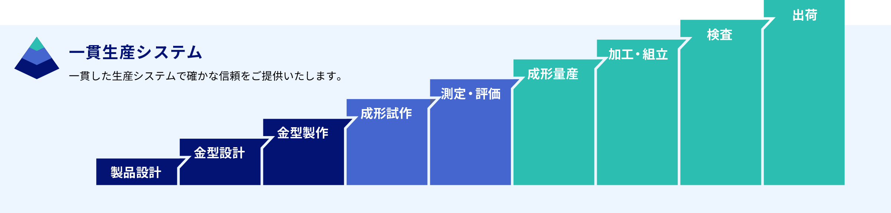
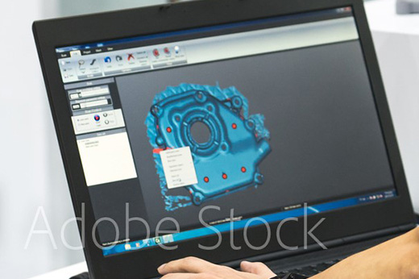
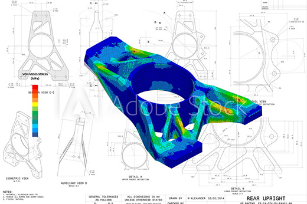
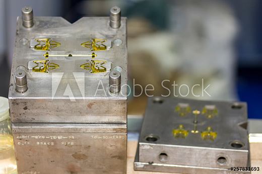
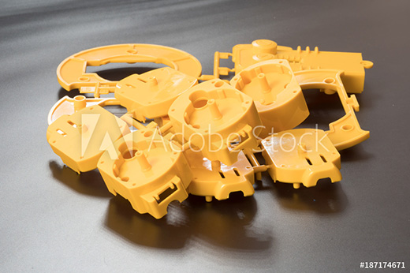
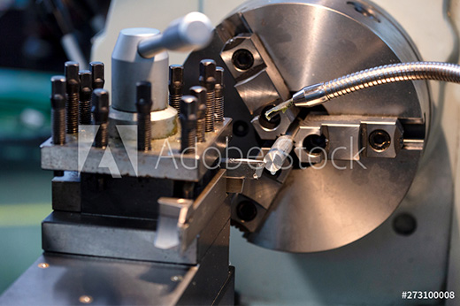
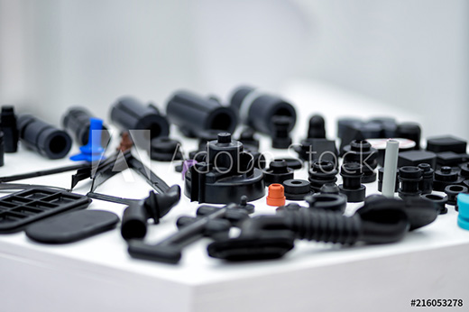
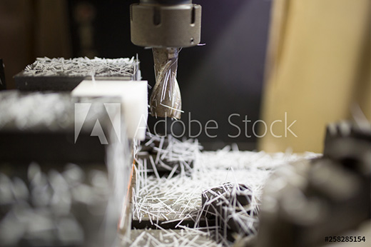
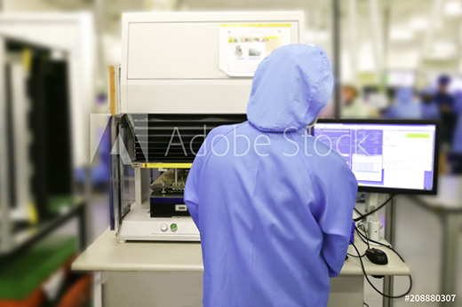
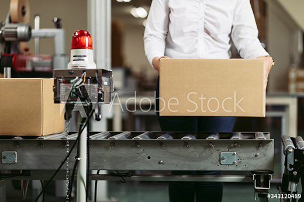

- HOME
- 一貫生産システム
一貫生産システムについて
三光化成グループでは、エンジニアリングプラスチック部品を中心に、製品のデザイン・設計・解析から、金型の設計・製作、射出成形、加工、検査、出荷まで、製品づくりにおけるすべての工程に一貫対応しております。
このような一貫生産システムを実現できるのは、総合力の高さをベースとしたネットワークがあるからこそ。お客様の「つくりたい」「欲しい」を、当社が完全サポートいたします。また、一貫生産システムによってものづくり工程のすべてをサポートすることで、品質の向上はもちろん、コスト・納期の合理化も飛躍的に向上させています。
※表は左右にスクロールして確認することができます。

- STEP1 製品設計
-

エンジニアリングプラスチック製品のスペシャリストとして、お客様のニーズに合った製品のデザイン・設計から当社がしっかりとサポートいたします。設計には「3D-CAD:Solid Works」など、また解析には構造解析「ANSYS Design Space」を駆使し、完全オーダーメイドの新製品の開発・製造にも対応可能です。
また、お客様へ製品の形状提案や改善提案も行っております。
- STEP2 金型設計
-

精密機器や自動車、電子機器等のプラスチック部品製造において、金型仕様の最適化は非常に重要なポイントです。当社では CAE（樹脂流動解析）によって金型設計前に樹脂充填から成形後の反り変形までの解析予測を実施し、品質トラブルの事前防止を行い、金型仕様の最適化を追求しております。
- STEP3 金型製作
-

高精度マシニングセンタによる高硬度材のパーツ直彫り、放電加工などを実施。当社ではこうした加工作業を24時間体制で行っておりますので、スムーズな金型製作が可能です。製品仕様に沿って製作された金型パーツは、正確かつ丁寧に組立・調整し、金型を仕上げます。また、金型パーツの試作には金属3Dプリンタを導入しています。
- STEP4 成形試作
-

製作した金型を使用し、成形試作を実施。お客様のニーズに沿った、最適な仕様を満たしているかどうか、さらにその品質を継続的に維持できるかどうかの評価を行うための成形試作を行っております。
お客様・外注先・工場各部署が連携し、高品質のものづくりを目指します。
- STEP5 測定・評価
-

三次元測定器を駆使し、試作品の測定・評価を行います。当社では、このように製品設計、試作といった量産に至る前の初期プロセスから品質保証を構築し、よりお客様のご満足につながる製品の製造・生産を追求し続けています。
また量産前にこうした技術面の評価を丁寧に行えば、量産後のミス・不具合等の発生を抑止する効果も期待できます。必要に応じて、早い段階で対策を講じることも可能に。確かなテクノロジーで品質を管理し、お客様のご要望にお応えいたします。
- STEP6 成形量産
-

15tの小型精密成形機から850tの大型成形機まで、500台を超える充実の設備体制で量産に臨みます。また、射出成形技能検定特級3名、1級16名、2級118名をはじめ、当社は確かな技術を有する人的パワーも充実しております。一般成形はもちろんのこと、高機能樹脂成形、2色成形、フープ成形、ロータリー成形、インサート・アウトサート複合成形、クリーンルーム成形、薄肉成形といった、特色ある成形にも対応可能です。
- STEP7 加工・組立
-

溶着、印刷などの二次加工、さらに部品組付け、ユニット品組立、製品組立・完成まで、生産のすべての工程に一貫対応いたします。
ロボット導入による自動化で、スムーズに仕上げることが可能です。
- STEP8 検査
-

当社は最新鋭の成形機を備えるだけではなく、自働化画像処理検査装置などの自働化装置を開発・製作して導入することにより、より安定した品質の保証に努めております。また、各工程を専門化し、各セクションの技術のレベルアップを図っています。
こうした取り組みによって高品質を維持することはもちろん、コストダウンや迅速な納期対応を可能にできることも、当社の一貫生産システムの大きな特長です。
- STEP9 出荷
-

出荷まで丁寧かつ迅速に対応させていただけるように、最新のサーバー・クライアント・ネットワークシステムを構築。お客様のご要望に細やかにお応えします。